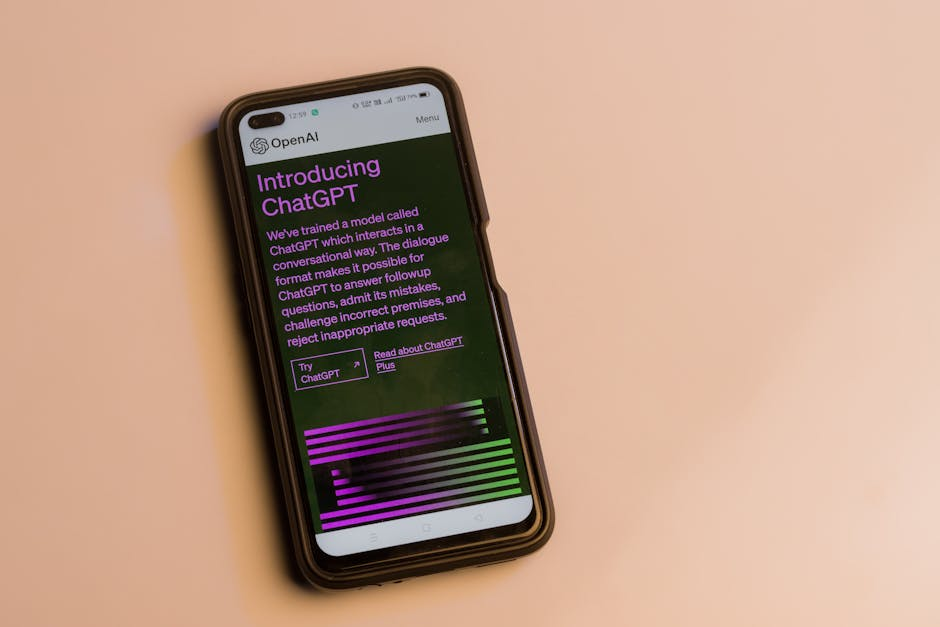
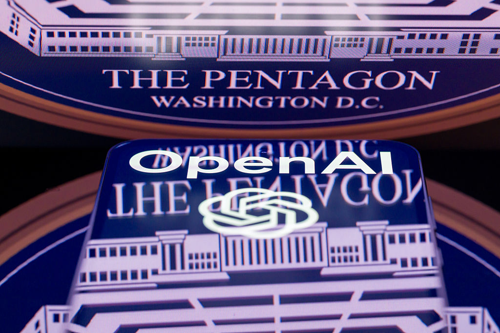
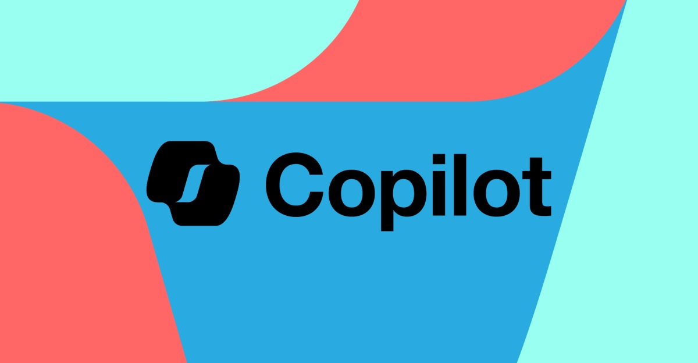
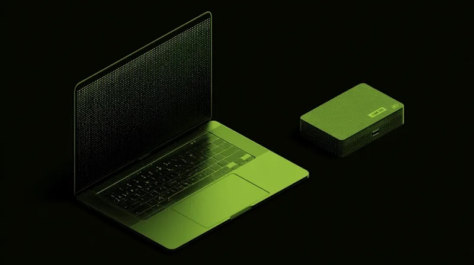
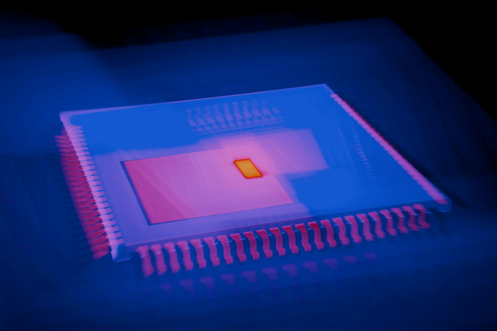
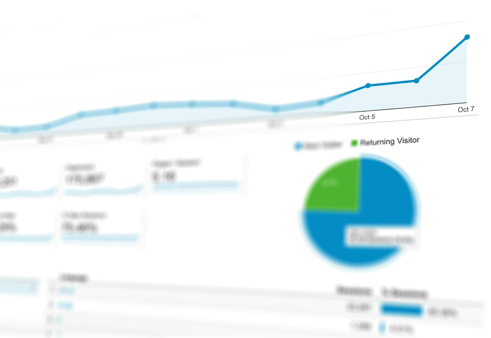
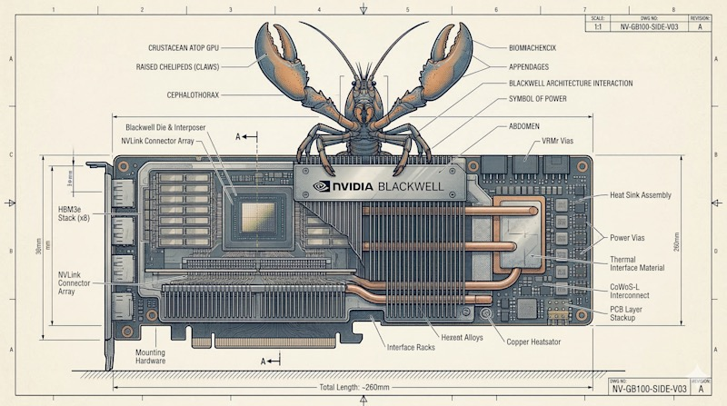
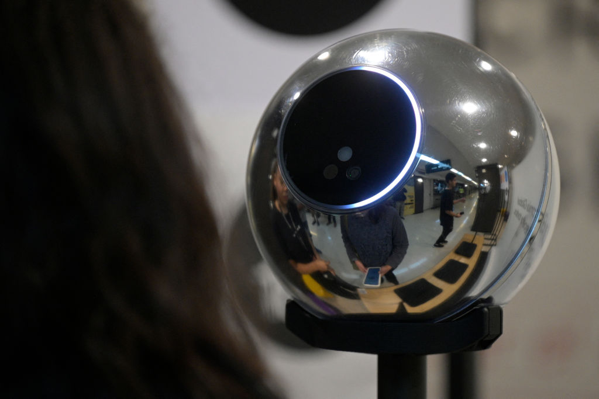
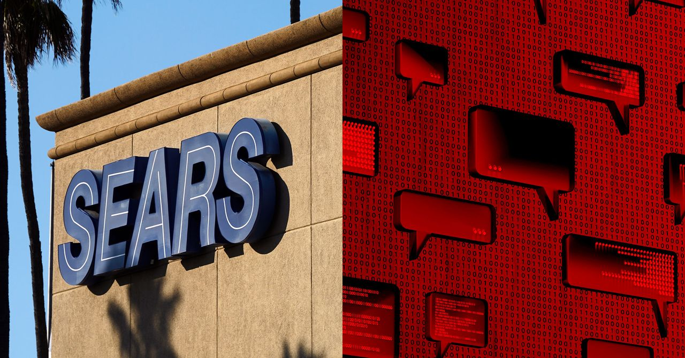

AI DAILY
AI 行业日报
2026年3月18日 · 精选 10 条
01产品发布
英伟达发布 Vera Rubin 七芯片平台，黄仁勋放话万亿美元订单
英伟达在 GTC 2026 上发布新一代计算平台 Vera Rubin，由 7 款芯片组成（Vera CPU、Rubin GPU、NVLink 6 Switch、ConnectX-9、BlueField-4 DPU、Spectrum-6、Groq 3 LPU），号称推理吞吐量是 Blackwell 的 10 倍，每 token 成本降至 1/10。AWS、Google Cloud、Azure、Oracle 全部接入，超过 80 家制造商参与。
OpenAI CEO Sam Altman、Anthropic CEO Dario Amodei、Meta 均公开站队。黄仁勋称这是"史上最大规模基础设施建设的起点"，预期 Blackwell + Vera Rubin 合计将带来 1 万亿美元订单。
INSIGHT
7 款芯片拼成一台"超级计算机"的打法，本质是锁定从训练到推理的全链路垄断。OpenAI、Anthropic、Meta 同时站队——这不是选择供应商，是承认别无选择。
02市场数据
GPT-5.4 上线一周新增 10 亿美元 ARR，效率提升 32 倍

OpenAI 总裁 Greg 披露，GPT-5.4 上线一周，日均处理约 5 万亿 token，带来 10 亿美元年化净新增收入。作为首个"原生大一统"模型，GPT-5.4 融合推理、编程、Computer Use、深度搜索和百万级上下文。
在 ARC-AGI-1 测试中，GPT-5.4 达到 90% 准确率，单任务成本 $0.37——三个月前 GPT-5.2 Pro 同等水平需 $11.64，效率提升 32 倍。但单次对话成本极高，有用户仅说一句"Hi"就花掉 $80。
INSIGHT
表面是"更贵的模型"，但真实任务层面的效率已出现指数级跃升——从 $11.64 降到 $0.37，3 个月 32 倍。token 经济学的拐点，可能比模型能力本身更值得关注。
03行业动态
OpenAI 与 AWS 签约，AI 进入美国政府机密网络

据 The Information 报道，OpenAI 与 AWS 达成合作，通过 AWS 云基础设施向美国政府销售 AI 产品，覆盖机密和非机密任务。这是继上月 OpenAI 与五角大楼签约后的又一次联邦扩张。
此举直接踏入 Anthropic 的核心地盘——AWS 此前投资 Anthropic 至少 40 亿美元，Claude 是 AWS GovCloud 最深度集成的前沿模型。而 Anthropic 因拒绝允许技术用于大规模监控和全自主武器，已被国防部列为供应链风险。
INSIGHT
OpenAI 正在用 Anthropic 主动放弃的空间做增量。AWS 既是 Anthropic 的金主又分发 OpenAI 的产品——云厂商的忠诚度永远跟着合同走，不跟着投资走。
04人事变动
Microsoft 任命新 Copilot 负责人，统一消费者和企业版

Microsoft 再次调整 AI 组织架构，任命 Jacob Andreou（前 Snap 增长负责人）统一负责 Copilot 消费者版和企业版的设计、产品与工程，直接汇报 CEO Nadella。此前消费者和企业 Copilot 由不同团队开发，功能割裂。
Microsoft AI CEO Mustafa Suleyman（原 Inflection AI 联合创始人）将不再直接管理 Copilot 产品，转而专注构建 Microsoft 自有 AI 模型。Nadella 在内部信中称，要把 Copilot 从"一系列好产品"变成"一个真正集成的系统"。
INSIGHT
Copilot 最大的问题从来不是技术，是没人真正拥有它。消费者版和企业版各跑各的两年，现在才统一——这更像是承认之前的分拆策略失败了。
05产品发布
英伟达 DGX Station：桌面超算，748GB 内存运行万亿参数模型

英伟达在 GTC 上发布 DGX Station 桌面超级计算机，搭载 GB300 Grace Blackwell Ultra 芯片，内置 748GB 统一内存、20 petaflops 算力，可在本地运行万亿参数模型——2018 年全球排名第一的 Summit 超算才是它 10 倍左右的性能。
CPU 与 GPU 通过 NVLink-C2C 互联，带宽 1.8TB/s（PCIe Gen 6 的 7 倍），实现无瓶颈统一内存访问。英伟达将其定位为 Agent 开发的本地硬件——搭配同期发布的 NemoClaw 开源栈，开发者可在桌面上构建和运行持续自主的 AI Agent。
INSIGHT
748GB 统一内存是关键数字——万亿参数模型塞不进显存就跑不了，再快的芯片也没用。DGX Station 解决的不是"更快"，是"能不能在本地跑"这个门槛问题。
06技术突破
Kimi 新架构 Attention Residuals，17 岁高中生共同一作

月之暗面（Kimi）团队发布 Attention Residuals 技术——将注意力机制从序列的"时间维度"旋转到网络的"深度维度"，让每一层可以选择性回看之前任意层的信息，而非传统残差连接的无差别累加。在 Kimi Linear 48B 模型上验证，训练效率提升 25%，推理延迟增加不到 2%。
该论文共同一作之一是 17 岁高中生陈广宇，与 RoPE 提出者苏剑林并列。马斯克评论"令人印象深刻"，Karpathy 称"我们对 Transformer 的理解还不够"。a16z 创始人 Marc Andreessen 也关注了陈广宇的社交账号。
INSIGHT
技术本身是对 Transformer 残差连接的一次结构性改进，但更值得注意的是：一个一年前还不知道 Transformer 是什么的高中生，现在在改写它。AI 降低的不只是使用门槛，是研究门槛。
07融资收购
月之暗面 3 个月估值翻 4 倍至 180 亿美元

据 Bloomberg 等多家媒体报道，月之暗面正进行新一轮 10 亿美元融资，最新估值 180 亿美元。2025 年 12 月这个数字还是 43 亿美元——3 个月翻了 4 倍多。从成立到"十角兽"，月之暗面仅用了两年多，快于拼多多和字节跳动。
反弹三重推力：智谱、MiniMax 港股 IPO 修复行业估值；Kimi K2.5 被 a16z 联创评价为"复制了 GPT-5 级别推理能力"；OpenClaw 热潮中 Kimi Claw 降低 Agent 门槛，Stripe 数据显示 Kimi 个人订阅 1 月支付环比增长 828%。
INSIGHT
一年前被 DeepSeek 冲击到暂停投放，现在估值翻 4 倍——关键转折不是技术突破，是 OpenClaw 打开了新的商业化场景。Agent 时代的模型公司，不再只比参数和跑分，还比谁能更快接住新需求。
08产品发布
英伟达 NemoClaw：给 OpenClaw 加上企业级安全

英伟达在 GTC 2026 发布 NemoClaw，一个与 OpenClaw 直接集成的企业级软件栈，单条命令即可安装。同时开源了 OpenShell 安全运行时，为自主 Agent 提供策略级安全、网络隔离和权限管控。
黄仁勋明确表态："Claude Code 和 OpenClaw 已触发 Agent 拐点。"LangChain 创始人 Harrison Chase 透露，每一个来找他的企业开发者都在用 OpenClaw。英伟达同步发布扩展版 Agent Toolkit，提供从构建到部署的全栈 Agent 工作流。
INSIGHT
OpenClaw 火得太快，安全跟不上——英伟达做的事就是给这辆飞驰的车装刹车。黄仁勋把 OpenClaw 类比为"个人 AI 的操作系统"，NemoClaw 就是它的企业版内核。
09产品发布
World（Sam Altman）推出 AI 购物 Agent 人类身份验证

Sam Altman 联合创办的 World 发布 AgentKit 测试版——一个面向电商网站的开发工具，允许网站验证 AI 购物 Agent 背后确实有真人授权。该工具基于 World ID（虹膜扫描生成的加密身份码）和 Coinbase/Cloudflare 开发的 x402 区块链支付协议。
随着越来越多消费者使用 AI Agent 代为购物，欺诈和大规模滥用风险上升。AgentKit 让用户用 World ID 注册 AI Agent，通过 x402 协议向商家证明"这个 Agent 背后有一个真实的、经过验证的人"。
INSIGHT
Agent 代替人类购物，第一个瓶颈不是技术，是信任——商家怎么知道下单的不是机器人刷单？World 的思路是用生物识别做信任基础设施，但虹膜扫描的隐私争议还没解决，就要先往商业场景里铺了。
10行业动态
Sears AI 聊天机器人 370 万条对话数据泄露至公网

安全研究员发现 Sears 家电维修服务的 AI 聊天机器人"Samantha"存在严重数据泄露——3 个未加密数据库公开暴露在网上，包含 370 万条聊天记录、140 万条语音文件和文字转录，时间跨度从 2024 年至今。
泄露数据包含客户姓名、电话、家庭地址、家电型号、维修预约信息。研究员警告，这些信息对钓鱼攻击极具价值——骗子可以冒充维修人员精准行骗。因为对话由 AI 处理而非人工，客户更容易放松警惕，泄露更多个人信息。
INSIGHT
AI 客服省了人力成本，但对话数据的敏感度反而更高——用户对着 AI 说的话往往比对真人更随意。370 万条未加密对话摆在公网上，问题不在 AI 本身，在于基础的数据安全被完全忽略了。
由 Zayen知览 整理 · 构建者视角